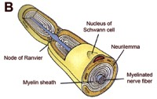

Steuncellen van het perifeer zenuwstelsel:
Rondom axonen van neuronen vinden we in het perifeer zenuwstelsel altijd Schwanncellen terug. Deze kunnen op 2 verschillende manieren de axonen omgeven. De axonen kunnen verzonken liggen in het oppervlak van de Schwanncel (A) of de Schwanncel kan rond het axon gewikkeld zijn zodat een myelineschede (B) ontstaat.
Rondom axonen van neuronen vinden we in het perifeer zenuwstelsel altijd Schwanncellen terug. Deze kunnen op 2 verschillende manieren de axonen omgeven. De axonen kunnen verzonken liggen in het oppervlak van de Schwanncel (A) of de Schwanncel kan rond het axon gewikkeld zijn zodat een myelineschede (B) ontstaat.

Een myelineschede wordt gevormd omdat een cel van Schwann zich rond een stukje van het axon wikkelt. Op die manier omgeven verschillende laagjes celmembraan het axon. Aangezien celmembranen veel vetten bevatten zullen ze sterk zwart aankleuren met de Osmiumkleuring. Op een dwarse doorsnede zie je axonen (A) en de omliggende myeline (zwart). Soms vind je zelfs de kern van de cel van Schwann (gele pijl). Aangezien de meeste axonen heel lang zijn, kan je op een overlangse doorsnede doorgaans goed zien dat ze achtereenvolgens door verschillende cellen van Schwann bedekt worden. Een plaats waar de myelineschede even stopt en een nieuwe begint noem je een knoop van Ranvier (open pijlen).
In het perifeer zenuwstelsel liggen de cellichamen van neuronen overwegend gegroepeerd in ganglia. Terwijl bij autonome ganglia de perikarya gesteund worden door het bindweefsel van het betreffende orgaan, vind je rond neuronale cellichamen in sensorische ganglia ook nog ‘kapselcellen’ of ‘satellietcellen’.
Kapselcellen of satellietcellen omgeven het volledige neuronaal cellichaam zodat ze een micro-omgeving creëren. Op een LM coupe zie je veelal vooral de kernen (pijlpunten). Door weefselpreparatie ontstaat er meestal een ruimte tussen het oppervlak van het cellichaam en de kapselcellen. Dit is een artefact.